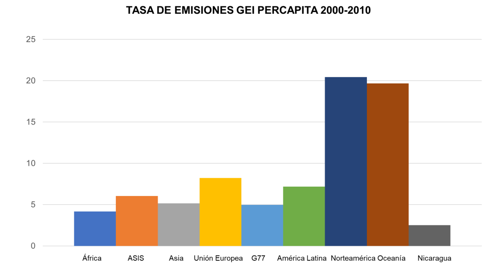
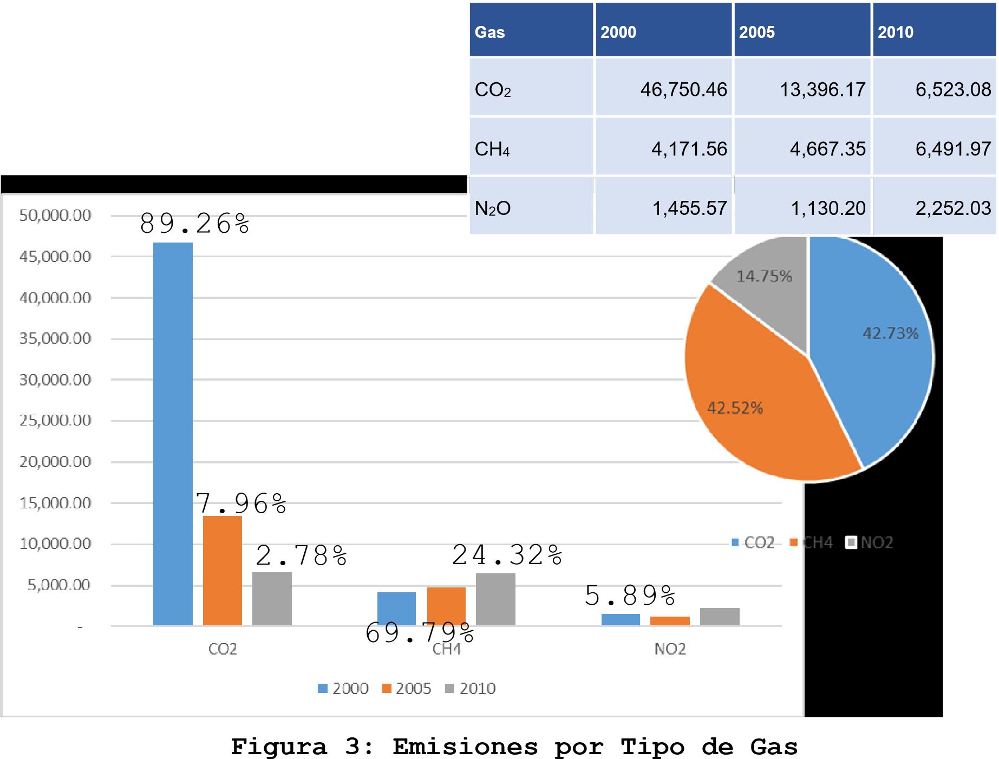

Managua, Nicaragua.
Agosto, 2018
Las emisiones de Gases Efecto Invernadero de Nicaragua reportadas entre el año 2000 y el 2010, representan el 0.01% de las emisiones globales para ese mismo período, valores son muy poco significativos en las estadísticas mundiales sobre las emisiones globales de gases efecto invernadero.
La Contribución Nacionalmente Determinada de Nicaragua tiene como propósito contribuir al cumplimiento del Acuerdo de París en relación a la mitigación del Cambio Climático y está orientada, principalmente, a los Sectores de Energía y Agricultura, Uso de la tierra y Cambios de usos de la tierra, por medio de medidas para el incremento de fuentes productoras de energías renovables, así como medidas para la conservación y recuperación forestal.
Esta Contribución Nacional, en función del derecho al desarrollo sostenible del Pueblo de Nicaragua, contempla la consecución de las metas sobre la base de lo establecido en los instrumentos normativos y de políticas con aportes nacionales, inversión extranjera y cooperación internacional, tanto para el sector energético como para el sector agricultura, uso y cambio de usos de la tierra.
Entre los años 2007 y 2016, se han instalado en Nicaragua 355.15 MW en energía renovable, alcanzando hasta el año 2017 un 53.5% de la generación total a base de fuentes de renovables.
En este contexto, es importante señalar que la cobertura nacional subió a un 93.2% en el año 2017, en relación al 69.8% que existía en el año 2010.
La Contribución Nacionalmente Determinada del sector energía será incrementar el porcentaje de generación eléctrica mediante fuentes de energías renovables, al 60% en el año 2030.
Entre otras Medidas y Políticas en el Sector Uso de la Tierra y Cambio de usos de la Tierra como contribución nacional, se propiciará la producción agroecológica, plantaciones de cultivos permanentes bajo sombra resistentes a los impactos del cambio climático, así como la Reducción de las prácticas ganaderas extensivas e incorporación de bosques en tierras ociosas que permitan conservar las capacidades nacionales de los sumideros de carbono.
Por su posición geográfica, Nicaragua está expuesta a diversos eventos vinculados a la variabilidad climática natural, tales como el fenómeno ENSO (El Niño-La Niña), los sistemas Monzónicos del Pacífico, los huracanes, entre otros, que generan significativas amenazas de sequía, inundaciones, deslizamientos de tierra, déficit de agua, destrucción de cultivos, bosques y viviendas.
Para hacer frente a la adaptación al cambio climático, el país requiere apoyo financiero para desarrollar medidas de adaptación prioritarias tales como: Modernización de los servicios hidrometereológicos del país, que permitan mantener pronósticos precisos y sistemas de alerta temprana, Construcción del Plan maestro de drenaje en la ciudad capital y otras ciudades del pacífico de Nicaragua que son muy vulnerables a inundaciones, Desarrollar un programa nacional de captación de agua y promoción de sistemas de riego en el corredor seco de Nicaragua, Fortalecer las capacidades nacionales en finanzas climáticas para facilitar el acceso a fuentes financieras, Incrementar la eficacia en la protección de las reservas de biosfera mediante un programa de ordenamiento de tierras e impulso a la reforestación, así como Elaborar el Plan Nacional de Adaptación al Cambio climático e Implementación de la Política Nacional de Mitigación y Adaptación al Cambio Climático, Desarrollo de infraestructura de agua potable y saneamiento y programas de resiliencia de los sistemas de agua potable urbano, Acceso a recursos adicionales para implementar medidas de adaptación en la red de infraestructura vial, Desarrollo de capacidades, acceso a tecnología y financiamiento en el sector agropecuario e Implementar programas de gestión resiliente de ecosistemas priorizados con enfoque de paisaje.
La República de Nicaragua es un país ubicado en el istmo centroamericano, entre la línea ecuatorial y el trópico de Cáncer, aproximadamente entre los 11° y los 15° de latitud Norte y respecto al meridiano de Greenwich, entre los 83° y los 88° de longitud Oeste. Cuenta con una superficie aproximada de 130,370 km², (1) limita al norte con Honduras, al sur con Costa Rica, al oeste con el océano Pacífico y al este con el Mar Caribe. En cuanto a límites marítimos, en el océano Pacífico, limita con El Salvador, Honduras y Costa Rica; mientras que en el mar Caribe limita con Honduras, Colombia, Panamá, Costa Rica y Jamaica (2).
Nicaragua está compuesta por 15 departamentos y 2 regiones autónomas. Son órganos de gobierno: el Poder Legislativo, el Poder Ejecutivo, el Poder Judicial y el Poder Electoral, con separación de poderes.
El pueblo nicaragüense es de naturaleza multiétnica y el español es la lengua oficial, aunque también son reconocidas las lenguas de los pueblos originarios y afrodescendientes, tales como el inglés criollo nicaragüense, misquito, Sumu o Sumo, Garífuna y Rama. La población estimada hasta el año 2016 es de 5,966,798 habitantes
Las actividades económicas de Nicaragua se dividen en tres grandes categorías: sector primario (agrícola, pecuaria; silvícola, caza y pesca); sector secundario (minería, industria y construcción), y sector terciario (gobierno, comercio, transporte, banca, infraestructura, etc.)
Según cifras del Banco Central, el producto interno bruto (PIB) en Nicaragua alcanzo en 2013 los US$ 11,255 millones (3). El PIB per capital fue de US$ 1,831 con un crecimiento de 4.4% respecto al año anterior. En la actualidad, un 57% de valor total producido en Nicaragua es generado a través de las actividades del sector terciario, mientras que los sectores secundarios y primario generan un 26% y 17%, respectivamente.
Nicaragua es tradicionalmente un país agropecuario; Un alto porcentaje (casi el 50%) de su población productiva se dedica a esta actividad y en menor grado a la forestería (explotación de madera y leña), caza y pesca. Además de proporcionar productos para la subsistencia de los habitantes, las actividades primarias contribuyen en parte a las exportaciones y son a su vez, las que dan más trabajo y emplean mayor mano de obra, que redunda en beneficios para los que se dedican a ellas.
Desde el año 2011 Nicaragua ha mantenido niveles de crecimiento superiores al promedio de América Latina y el Caribe, a pesar de las difíciles condiciones internas debida a la falta de gobernabilidad heredadas de Gobiernos precedentes y las complejidades económicas globales.
Según señala el Banco Mundial, Nicaragua se ha destacado por mantener disciplinadas políticas macroeconómicas, combinadas con una expansión constante de las exportaciones y la inversión extranjera directa.
En 2011, el crecimiento alcanzó un récord del 5.1 por ciento, con una desaceleración al 4.9 y 4.7 en 2015 y 2016, respectivamente. Para este año, el pronóstico se sitúa en 4.6 por ciento, con lo que Nicaragua se coloca en el segundo lugar de crecimiento entre los países de Centroamérica, con perspectivas favorables para la inversión extranjera directa y el comercio.
Según la Encuesta de Medición de Nivel de Vida 2014, del Instituto Nacional de Información de Desarrollo, para el período 2009 a 2014, en Nicaragua hubo una disminución de 13 puntos porcentuales en la pobreza nacional, que descendió de 42.5 a 29.6 por ciento. Mientras que, para el mismo período, la pobreza extrema presentó una disminución de 6 puntos porcentuales, tras pasar del 14.6 por ciento a un 8.3 por ciento (4).
No obstante, el progreso alcanzado, los retos en crecimiento económico y reducción de la pobreza siguen siendo grandes, debido a que Nicaragua aún es uno de los países menos desarrollados de América Latina.
También el Plan Nacional de Desarrollo Humano (PNDH) se está actualizando al 2018, donde su objetivo general es reducir la desigualdad mediante el aumento del combate a la pobreza, la reducción del gasto y el incremento de la inversión en los sectores sociales y la infraestructura rural.
Nicaragua, basa sus prioridades en facilitar e impulsar de forma acelerada el crecimiento económico como premisa para reducir la pobreza y la alta vulnerabilidad actual a la variabilidad climática y a los impactos del cambio climático.
El país ha mantenido y mantiene activa participación y compromiso de Estado a nivel nacional e internacional en las negociaciones de cambio climático donde ha defendido la necesidad de un mayor compromiso en la reducción de emisiones de gases efecto invernadero por parte de los países más emisores, para cumplir el objetivo de no exceder un calentamiento superior a los 2 grados centígrados en este siglo.
Son prioridades estratégicas para enfrentar los retos del cambio climático, el fortalecimiento de la institucionalidad; la consolidación del modelo de diálogos y alianzas con el sector productivo como espacio de consenso y trabajo conjunto, la diversificación de la matriz energética; la gestión y restauración de cuencas hidrográficas, haciendo énfasis en la restauración de suelos, fuentes de agua y bosques ; la protección y conservación de la biodiversidad; la Protección y recuperación de bosques en zonas de recarga hídrica y cuerpos de agua, Aumento y/o mantenimiento de la biodiversidad en áreas protegidas y corredores biológicos, que incluye las actividades de conservación y regeneración natural de áreas protegidas, conservación y enriquecimiento de bosques en áreas protegidas, plantaciones forestales e implementación de sistemas agroforestales y silvopastoriles.
El Plan Nacional de Desarrollo Humano 2018-2021 también orienta sus acciones a mediano plazo dirigidas a:
Nicaragua ha desarrollado importantes y significativos esfuerzos para enfrentar los retos del Cambio Climático, entre los que se destacan la publicación de la Estrategia Nacional Ambiental y del Cambio Climático en el año 2010, que está conformada por cinco lineamientos estratégicos que son:
El Gobierno de Reconciliación y Unidad Nacional basa su política en favorecer el desarrollo económico y social protegiendo los sectores de población más vulnerables, mediante un modelo de trabajo directo con las familias y las comunidades, creando capacidades, conocimientos y conductas que permitan a la población enfrentar y recuperarse de todos los riesgos a desastres, así como un modelo de trabajo en alianzas con el sector productivo, en permanente dialogo para enfrentar los retos del desarrollo económico, la generación de empleo y reducción de la pobreza.
Actualmente se encuentra en fase de consulta la Política Nacional de Cambio Climático, que contiene los siguientes lineamientos:
En materia energética existe un abundante marco normativo y jurídico que favorece el uso racional de la energía eléctrica, priorizando el uso de fuentes de generación renovables, entre las que se destacan:
Los principales aportes de Nicaragua en materia de mitigación voluntaria del cambio climático se describen a continuación:
Sector Energía: El Gobierno de Unidad y Reconciliación Nacional ha incrementado la producción de energía renovable del 25% en el año 2007, hasta un 51% en el año 2013, aún en condiciones de severos racionamientos de la energía que existía en el momento de toma del poder, que provenían desde el año 2005.
Contaminación Ambiental: Para contribuir a la protección de la capa de ozono, se ha eliminado en un 100% el consumo de los gases llamados CFCs a partir del 01 de enero del 2010 y se está implementando un Plan de Gestión para la eliminación de los tipos de gases HCFCs del 2012 al 2020.
Agropecuario: En el año 2010, Nicaragua se integró a la Iniciativa Global de Metano, la cual tiene como objetivo, en el corto plazo, reducir las emisiones globales de metano, capturándolo a un costo razonable y usándolo como fuente de energía limpia. Hasta el año 2010 se han construido 1,512 biodigestores, de los cuales entre 300 y 400 aproximadamente, se encuentran en funcionamiento.
Transporte: Se está implementando el proyecto “Promoción de Transporte Ambientalmente Sostenible en la Managua Metropolitana”, dentro de las prioridades para reformar el sistema de transporte público en el área Metropolitana de Managua, tal como se refleja en el Plan Integral de Transporte. Obteniendo una reducción directa de 892,000 toneladas de emisiones de CO2 a lo largo de los próximos 20 años.
Desechos: El proyecto de desarrollo integral de La Chureca ha incluido no solo el sellado del vertedero del mismo nombre, considerado el mayor de América Latina, sino también la construcción de una planta de reciclaje en la que trabajan los recolectores de basura, así mismo la construcción de casas, una escuela para las más de 250 familias que habitan el lugar y la reducción de los gases producidos por la propia basura en descomposición que antes de la intervención producían combustiones espontáneas en toda la superficie del vertedero, ahora son conducidos al exterior por un circuito de tuberías y por chimeneas de gasificación por las que sale el gas metano. Estos gases están previstos aprovecharse en la generación eléctrica por la Alcaldía de Managua.
Desde el año 2007 los Sistemas de Tratamiento de Aguas Residuales han aumentado significativamente, para el año 2010, 13 cabeceras departamentales brindan tratamiento a las aguas residuales
Desde el inicio de operaciones de la Planta de Tratamiento de Aguas Residuales de Managua el porcentaje de tratamiento de las aguas residuales recolectadas en el país mejoró significativamente de 35.22% en el año 2007 a 98.19% para el año 2011 y el índice de tratamiento pasó de 19.66% a 57.63%.
Bosques: Nicaragua recibió la aprobación del Fondo Cooperativo del Carbono Forestal, a través del programa ENDE-REDD+ de MARENA, con la asistencia del Banco Mundial, mediante el cual las comunidades rurales y pueblos indígenas que viven en los bosques de la Costa Caribe, Bosawás e Indio Maíz reducirán la deforestación y degradación forestal, reduciendo las emisiones de aproximadamente 11 millones de Toneladas de Dióxido de Carbono y se recibirá a cambio incentivos positivos por 55 millones de dólares en cinco años.
Los avances anteriormente expuestos son el sustento o la plataforma de partida para lograr un escenario futuro de crecimiento económico y social con bajas emisiones de gases efecto invernadero y con capacidad de adaptarse a los impactos de la variabilidad climática y el cambio climático, ya que la política de cambio climático define un camino con lineamientos y acciones específicas que deberán adoptarse en el futuro inmediato, así como el marco legal, que favorece la eficiencia energética y las facilidades de inversión en energía renovables, contribuyen a la creación de un marco para el desarrollo del sector energético con bajas emisiones de carbono, mientras que muchas de las acciones que se han venido desarrollando contribuyen con el aprendizaje de toda la sociedad y tributan de forma directa para el cumplimiento de la Contribución Nacional del Nicaragua.
Las emisiones de GEI para el año 2010 expresadas en giga gramos de dióxido de carbono equivalente (GgCO2 eq), se calcularon en 15,267.09 GgCO2eq, lo que representa 15,267,090 ton de CO2eq, con una tasa emisiones per cápita de 2.0 toneladas de CO2eq. por habitante, que significa 0.01% de las emisiones globales para ese periodo (5).

Figura 1: Tasa de emisiones per cápita a nivel de grupos de países
A nivel mundial, para el periodo 2000-2010, las emisiones de Gases Efecto Invernadero se distribuyeron de la siguiente forma:
Según cifras del Banco Mundial, para el período 2000-2010, Nicaragua ocupaba el puesto 111 en el ranking mundial en emisiones totales de gases efecto invernadero (6).
Como se observa en la siguiente figura, la contribución de las emisiones de GEI en el 2010 por categoría en términos de GgCO2 eq. es la siguiente: el 67.89% corresponde al sector Uso y Cambio de Uso de la Tierra, el 29.40% al sector Energía, el 1.98% al sector Desechos y el 0.73% al sector Procesos Industriales. En el año 2005 las emisiones se estimaron en 19,193.72 GgCO2eq, de los cuales el 75.34% corresponde al sector Uso y Cambio de Uso de la Tierra, el 22.49% al sector Energía y el 2.16% al sector Desechos y Procesos Industriales; y en el año base 2000, se contabilizaron 52,377.59 GgCO2eq de los cuales el 91.56% de las emisiones estimadas corresponden al sector Uso y Cambio de Usos de la Tierra, seguido por el sector Energía con 7.81% de las emisiones, los sectores Desechos y Procesos Industriales representaron el 0.63% de las emisiones de ese año.
Figura 2:Emisiones de GEI por Sector
Las emisiones de CO2 en el año 2010 fueron 6,523.08 Gg, que representan una contribución de 42.73% al total del inventario e indican una disminución del 86.05% con respecto al año base 2000. Las emisiones de CO2 en el país provienen principalmente del cambio de uso de suelo y por la quema de combustibles fósiles.
En el año 2010, las emisiones de CH4 fueron 6,491.97 GgCO2 eq, lo que representa un incremento de 35.74%% con respecto al año base 2000. La principal fuente de emisión corresponde a la fuente Fermentación Entérica del ganado.
En el 2010, las emisiones de N2O fueron 2,252.03 GgCO2 eq, lo que representa un incremento de 35.37% con respecto al año base 2000. La principal contribución proviene de los suelos agrícolas con 93.88%; energía con un 4.32%, manejo del estiércol 1.65% y desechos 0.15%.

Figura 3:Emisiones por Tipo de Gas
El limitado tamaño de las emisiones es atribuible por:
Las condiciones económicas y sociales desde el año 2010 al 2016 han cambiado significativamente, por lo que, las emisiones de gases efecto invernadero han estado creciendo y la tendencia futura es al crecimiento, ya que se anticipan en las próximas décadas importantes crecimientos en diversos sectores (transporte, industria, producción de manufactura en zonas francas, crecimiento del sector construcción y producción de cemento, ganadería, uso de aire acondicionado por las elevadas temperaturas que se suelen registrar en la región pacífico durante al menos siete meses del año, gestión de residuos sólidos y líquidos, etc.), por lo que no se puede asumir un escenario de crecimiento “business as usual”.
En el marco de la Tercera Comunicación Nacional de Cambio Climático se desarrolló un estudio de los posibles escenarios de mitigación al cambio climático de Nicaragua sin recibir financiamiento y considerando diferentes rutas posibles.
Para la elaboración del estudio se construyeron cuatro posibles escenarios con diferentes niveles de supuestos que se desarrollan en la siguiente tabla
Tabla 1: Escenarios propuestos
| Escenario tendencial T | En un escenario tendencial se logra sostener el crecimiento económico de los últimos años (alrededor del 5 %), con bono demográfico, pero sin hacer uso máximo de las potencialidades ni de los recursos naturales, ni del capital humano ni de las oportunidades de insertarse en cadenas de valor globales. Este escenario fue considerado como el escenario base |
| Escenario de uso eficiente de los recursos naturales R | Se logra optimizar el uso de los recursos naturales, mejorando la productividad de los recursos naturales añadiendo 2 puntos al crecimiento del PIB anual por la eficiencia. Este escenario no contempla transformación social en una situación próspera para algunos, aunque poco inclusiva. Este escenario es calculado con el modelo IFs como el de políticas. |
| Escenario de globalización inclusiva U | Nicaragua consigue la transformación social, que genera industrialización, desarrollo humano, inserción en cadenas de valor y transformación de la fuerza productiva. Este escenario es calculado con el modelo IFs como el escenario de sostenibilidad. |
| Escenario de subdesarrollo S | Fenómenos sociales, naturales (vulcanismo o sismos) y climáticos afectan a la productividad de los recursos naturales, lo que lleva a situaciones que reducen el desarrollo económico y humano. Se hace imposible cumplir los ODS al 2030 y surge una nueva década perdida. |
Para realizar las modelaciones de cada escenario se utilizó el modelo IFs(7) que cuenta con un módulo de análisis de sostenibilidad avanzada (ASA – advanced sustainability analysis) desarrollado por la Centro de Investigaciones del Futuro de Finlandia en el 2002 y ha sido perfeccionado por el Pardee Center, hasta su versión más actual.
La base del cálculo es la relación entre los insumos materiales (tales como combustibles fósiles y agua) en sistemas humanos y las emisiones que parten de ellos (tales como el dióxido de carbono) por un lado y el tamaño del PIB, la población y la fuerza laboral, por el otro. Los resultados se pueden obtener de manera gráfica o tabular.
En la tabla siguiente se muestra la variación porcentual anual acumulada esperada de las emisiones de Nicaragua en las próximas décadas con los cambios en población y economía (Ver tabla 2).
| Años | Año Base | Tendencial | Escenario de Políticas | Escenario de Subdesarrollo | Escenario Sostenibilidad |
|---|---|---|---|---|---|
| Variación porcentual anual acumulada esperada de las emisiones | Variación porcentual anual acumulada esperada de las emisiones | Variación porcentual anual acumulada esperada de las emisiones | Variación porcentual anual acumulada esperada de las emisiones | Variación porcentual anual acumulada esperada de las emisiones | |
| 2017 | 10.99 | 10.68 | 11.08 | 11.08 | 11.05 |
| 2018 | 14.05 | 13.93 | 14.12 | 14.23 | 13.81 |
| 2019 | 17.62 | 17.91 | 17.68 | 17.88 | 17.06 |
| 2020 | 22 | 22.55 | 21.98 | 22.38 | 20.86 |
| 2021 | 26.33 | 27.14 | 26.01 | 26.78 | 24.28 |
| 2022 | 30.54 | 31.52 | 29.68 | 31.1 | 26.92 |
| 2023 | 34.61 | 35.38 | 32.85 | 35.32 | 29.13 |
| 2024 | 36.9 | 37.47 | 34.31 | 37.74 | 29.58 |
| 2025 | 39.41 | 39.83 | 36 | 40.39 | 30.22 |
| 2026 | 41.91 | 42.3 | 37.66 | 43.05 | 30.78 |
| 2027 | 44.55 | 44.93 | 39.28 | 45.82 | 31.36 |
| 2028 | 47.33 | 47.97 | 40.97 | 48.79 | 32.05 |
| 2029 | 50.04 | 51.24 | 42.55 | 51.86 | 32.68 |
| 2030 | 52.88 | 54.29 | 43.71 | 54.57 | 33.05 |
| 2031 | 55.82 | 57.52 | 44.96 | 57.28 | 33.54 |
| 2032 | 58.84 | 60.46 | 46.18 | 60.3 | 34 |
| 2033 | 61.75 | 63.14 | 47.12 | 63.39 | 34.19 |
| 2034 | 64.96 | 65.77 | 47.29 | 66.52 | 34.25 |
| 2035 | 65.67 | 68.01 | 47.14 | 68.75 | 33.62 |
| 2036 | 66.17 | 69.77 | 46.71 | 70.79 | 32.78 |
| 2037 | 67.12 | 71.31 | 46 | 72.77 | 31.8 |
| 2038 | 67.89 | 72.64 | 45.02 | 74.63 | 30.53 |
| 2039 | 68.5 | 73.6 | 43.76 | 76.27 | 28.98 |
| 2040 | 68.61 | 74.23 | 42.27 | 77.95 | 27.13 |
| 2041 | 68.51 | 74.34 | 40.59 | 79.1 | 25.19 |
| 2042 | 67.64 | 74.1 | 38.79 | 79.96 | 23.07 |
| 2043 | 66.54 | 73.51 | 36.6 | 80.72 | 20.83 |
| 2044 | 65.33 | 72.83 | 34.46 | 81.48 | 18.47 |
| 2045 | 63.66 | 72.05 | 31.8 | 81.87 | 16.21 |
| 2046 | 61.35 | 70.67 | 28.74 | 81.81 | 13.71 |
| 2047 | 59.02 | 69.1 | 25.17 | 81.25 | 11.2 |
| 2048 | 56.38 | 67.15 | 21.3 | 80.64 | 8.396 |
| 2049 | 53.42 | 64.75 | 17.18 | 79.95 | 5.315 |
| 2050 | 50.32 | 61.95 | 12.96 | 78.91 | 2.047 |
| 2051 | 47.15 | 58.93 | 8.747 | 77.91 | -1.408 |
| 2052 | 43.85 | 55.87 | 4.37 | 76.78 | -4.965 |
| 2053 | 40.23 | 52.46 | -0.092 | 75.46 | -8.469 |
| 2054 | 36.41 | 49.06 | -4.406 | 74.12 | -12.01 |
| 2055 | 32.48 | 45.74 | -8.46 | 72.69 | -15.54 |
| 2056 | 28.52 | 42.02 | -12.4 | 71.3 | -19.03 |
| 2057 | 24.36 | 38.3 | -16.42 | 69.65 | -22.43 |
| 2058 | 20.09 | 34.24 | -20.22 | 67.83 | -25.66 |
| 2059 | 15.86 | 29.74 | -23.97 | 66.33 | -28.77 |
| 2060 | 11.9 | 25.09 | -27.71 | 64.85 | -31.75 |
| 2061 | 8.024 | 20.21 | -31.38 | 64.02 | -34.59 |
| 2062 | 4.159 | 15.52 | -35.06 | 63.46 | -37.35 |
| 2063 | 0.239 | 10.99 | -38.79 | 63.02 | -39.8 |
| 2064 | -3.637 | 6.423 | -42.45 | 62.86 | -42.19 |
| 2065 | -7.386 | 2.021 | -45.97 | 62.94 | -44.55 |
| 2066 | -11.08 | -2.42 | -49.2 | 63.02 | -46.87 |
| 2067 | -14.7 | -6.85 | -51.97 | 62.92 | -49.12 |
| 2068 | -18.28 | -11.2 | -53.48 | 62.66 | -48.94 |
| 2069 | -21.63 | -15.2 | -55.13 | 62.16 | -49.3 |
| 2070 | -24.5 | -18.6 | -56.87 | 61.65 | -50.01 |
Fuente: Estudio de los escenarios de Mitigación del Cambio Climático en Nicaragua, Tercera Comunicación Nacional de Cambio Climático. (En elaboración)
De las proyecciones anteriores se puede apreciar que para el año 2030, se espera un crecimiento que oscile entre un 33% y un 55% de incremento de las emisiones de gases efecto invernadero, explicado por las necesidades de la población y la economía (Color amarillo en la tabla).
En el escenario más optimista, Nicaragua llegaría a estabilizar sus emisiones entre 2051 y 2066, pero en el peor de los casos, esto ocurriría sólo muchos años después de 2070.
Utilizando los mismos escenarios y haciendo uso de un módulo del modelo IFS, se realizó el cálculo de la deforestación proyectada en función de las variables socioeconómicas. Este módulo también permite el cálculo de la deforestación proyectada en función de las variables socioeconómicas.
De acuerdo a la población y economía se espera el posible control de la deforestación en la década del 2050, sin embargo, la deforestación podría continuar en el caso del peor de los escenarios. (Color verde en la tabla).
Adicional a lo anterior, para el año 2030, Nicaragua tendrá una población de 7 millones de habitantes (8) y, por otro lado, de acuerdo a CEPAL, existirá una flota vehicular que superará el millón de vehículos (entre 2 y 3.5 millones de autos contra 700, 000 actuales) (9). A lo que se suma un incremento por lo menos unos 7 millones de reses (pudiendo superar los 10 millones) con mayor tamaño, peso y por consiguiente mayores emisiones.
Los caminos que conducen a un mayor desarrollo generarán un crecimiento de las emisiones de gases efecto invernadero, respecto a los niveles del año 2010.
La Contribución Nacionalmente Determinada de Nicaragua a la mitigación del Cambio Climático incluye los sectores Energía y Uso de la tierra y Cambios de usos de la tierra, por medio de medidas para el incremento de otras fuentes de energías renovables como solar, geotérmica, gas natural y eólica, así como medidas para conservación y recuperación forestal.
La Contribución Nacional de Nicaragua contempla la consecución de las metas sobre la base de lo establecido en los instrumentos normativos y de políticas con aportes nacionales e inversión extranjera, tanto para para el sector energético como para el sector de uso y cambio de usos de la tierra.
Se podrá aumentar la ambición en el sector UT-CUTS de contar con apoyo financiero internacional, para reducir el avance de la frontera agrícola.
Hasta el año 2016 la Capacidad Instalada Nominal, tomando en consideración las diferentes fuentes de energía que se utilizan para la generación de electricidad es de 1,396.32 MW, de los cuales 735.19 MW (52.65%) están constituidos por el parque térmico que genera electricidad a base de fuel oíl y diésel, las plantas eólicas tienen una capacidad instalada de 186.20 MW (13.34%), las plantas de biomasa que operan con bagazo de caña (ingenios azucareros) incorporan 176.60 MW (12.65%), el parque hidroeléctrico tiene 142.45 MW (10.20%), la capacidad instalada geotérmica es de 154.50 MW (11.06%) y la planta solar fotovoltaica con 1.38 MW (0.10%). Resulta importante mencionar el considerable aumento de la capacidad instalada de plantas de generación eléctrica que utilizan fuentes renovables en los últimos años. Del año 2007 al año 2016, se han instalado 355.15 MW en energía renovable, de los cuales 186.20 MW (52.23%) son plantas eólicas, 77.00 MW (21.60%) plantas geotérmicas, 54.80 MW (15.37%) son plantas de biomasa, 37.15 MW (10.42%) plantas hidroeléctricas y 1.38 MW (0.38%) planta solar fotovoltaica, alcanzando hasta el año 2017 un 53.5% de generación a base de fuentes de renovables.10
En este contexto es importante señalar que la cobertura nacional subió a un 93.2% en año 2017, en relación al 69.8% que existía en el año 2010.
El crecimiento de la generación a través de fuentes de energías renovables se ha visto limitado por el alto precio de las tecnologías para producir energía con estas fuentes, lo que ha obligado a equilibrar la producción de energía con fuentes diversas.
La Contribución Nacionalmente Determinada a la mitigación del sector energía será incrementar el porcentaje de generación eléctrica por medio de otras fuentes de energías renovables como solar, eólica y biomasa en un 60% en el año 2030, que representa con respecto al año 2007, un incremento del 35% en la participación de las energías renovables dentro de la matriz eléctrica nacional, considerando el aumento de la cobertura.
Desde 2008, Nicaragua inició negociaciones para desarrollar el proceso de preparación en el marco de REDD+, y en el año 2013 fue aprobada una iniciativa REDD+, financiada por el Fondo Cooperativo del Carbono y administrada por el Banco Mundial, para implementar un programa de conservación de los bosques y evitar su degradación, que entrará en vigencia entre 2019-2014 y consiste en reducir las emisiones en 11 millones de toneladas de CO2eq. dentro de Áreas Protegidas en las Regiones Autónomas de la Costa Caribe de Nicaragua.
Otro posible potencial de mitigación que se estudió fueron las 72 áreas protegidas que posee Nicaragua, de las cuales 25 se localizan en la región climática del pacífico con predominio de bosques secos en 10,689 hectáreas, la región central del país con una parte de bosques situados en clima seco y otra parte en clima semi húmedo con 5, 282 Ha y las áreas protegidas de las Regiones de la Costa Caribe, que se ubican en zonas húmedas y muy húmedas 15,272 Ha, también en esta región se localizan dos Reservas de Biosfera que totalizan 2,232,968 Ha.
Un estudio efectuado en el marco de la Tercera Comunicación Nacional de Cambio Climático, para elaborar este análisis, identifica sobre los mapas oficiales de usos de suelo entre el año 2010 y 2015, que los usos de la tierra forestales dentro de áreas protegidas para el año 2010 eran de 44.88 % y para el 2015 esos usos eran de 42.19% con una tendencia de disminución de las tierras forestales de las áreas protegidas en cinco años de 2.69%, significando una tasa anual de cambio de las tierras forestales a otros usos del 20%, o sea 11,305 Ha/años
Como resultado del estudio anterior, para el año 2015 las áreas protegidas emitían 4316.66 Gigramos CO2eq. y absorbían 10798.45 Gigramos de CO2 eq. lo que demuestra, que aun en estas áreas bajo protección, se requieren importantes recursos para su conservación.
II.2.2.1.1. Medidas y Políticas en el Sector Uso de la Tierra y Cambio de usos de la Tierra como contribución nacional
Las principales medidas que impulsará el Gobierno derivadas de la política nacional de cambio climático como contribución nacional en este sector son:
Estas medidas serán impulsadas por el Gobierno en consenso con el sector privado y la cooperación internacional, con quienes se ha consultado la Política Nacional de Cambio Climático
| INFORMACION RESUMIDA | ||
|---|---|---|
| Año meta NDC | 2030 | |
| Cobertura geográfica para la cuantificación de emisiones | Inventarios nacionales. Estudios particulares de Áreas protegidas | |
| Sectores de los Inventarios Nacionales considerados en la meta | Energía (29.4% de las emisiones en 2010) | Uso y cambio de Uso de la Tierra (67.8% de las emisiones en el 2010) |
| Contribución a la mitigación | Promoción del uso de otras fuentes de energía renovables: Al 2030, el 60% de la capacidad instalada de la matriz eléctrica deberá provenir de otros tipos de fuentes de energías renovables | Reforestación de zonas degradadas: Contribución Unilateral: Conservación en la capacidad de absorción los sumideros de Carbono con respecto al Escenario de Referencia al 2030. Contribución con Financiamiento Internacional: Incremento en la capacidad de absorción de Carbono en un 20% con respecto al Escenario de Referencia al 2030. |
| Año base de la contribución | 2017 | 2010 |
| Fuentes de datos utilizados para la definición de la meta | Segunda Comunicación Nacional de Cambio Climático de Nicaragua Tercera Comunicación Nacional de Cambio Climático Nicaragua |
Tercera Comunicación Nacional de Cambio Climático Nicaragua (2000-2010) |
| Gases considerados en las contribuciones | Dióxido de Carbono Equivalente | |
| Metodología para la cuantificación de las emisiones | Directrices para los INGEI, Panel Intergubernamental de Expertos sobre Cambio Climático (IPCC) 2006 | |
| Participación en Mercados de Carbono | Nicaragua participa en el Mercado Internacional de Carbono mediante iniciativa REDD+, financiada por el Fondo Cooperativo del Carbono y administrada por el Banco Mundial, para implementar un programa de conservación de los bosques y evitar su degradación, que entrará en vigencia entre 2019-2014 y consiste en reducir las emisiones en 11 millones de toneladas de CO2eq. dentro de Áreas Protegidas en las Regiones Autónomas de la Costa Caribe de Nicaragua | |
Las propuestas nacionales reflejadas en esta contribución nacional son justas y ambiciosas porque a pesar, de la casi nula contribución nacional a las emisiones globales, el país establece un compromiso para continuar incrementando la generación de energía renovables en la matriz energética nacional hasta un 60% para el año 2030, considerando que el esfuerzo realizado se hace bajo un marco económico mundial en el cual los precios de las tecnologías para producir energías renovables, son muy superiores a otras tecnologías cuyas fuentes de producción de energía son altamente contaminantes.
También, el Gobierno de Nicaragua, junto a su pueblo, trabaja arduamente para elevar los niveles de producción, reducir la pobreza y reponerse de las pérdidas anuales que le dejan los eventos asociados a la variabilidad climática y el cambio climático, incorporando acciones y medidas para conservar la cobertura forestal de los bosques, en las áreas protegidas y se trabaja bajo un modelo de alianzas, diálogos y consensos con el sector privado para incrementar la cobertura boscosa en los sistemas de producción agropecuarios, sin tener acceso a fuentes de financiamiento para ello.
Si el país recibe financiamiento internacional se podría lograr un incremento en la capacidad de absorción de Carbono en un 20% con respecto al Escenario de Referencia, para el año 2030.
Antes de la adhesión de Nicaragua al Acuerdo de París, el país ha venido desarrollando acciones para reducir los gases de efecto invernadero que contribuyen al cambio climático y ha definido acciones para iniciar la implementación de una política nacional para el año 2018 que asume acciones importantes para la reducción de emisiones al año 2020.
Se ha previsto durante el año 2018 realizar las consultas con los diferentes sectores, previo su envío a la Convención Marco de Naciones Unidas sobre el Cambio Climático, así como el establecimiento de compromisos de los sectores.
También se utilizarán los mecanismos de Medición, Reporte y Verificación a través de la instancia de Gobierno que defina la Presidencia de la Republica.
Nicaragua enfrenta el gran reto de crecer económicamente para reducir la pobreza en un contexto donde el cambio climático produce amenazas que generan pérdidas y daños, por lo que es indispensable lograr un crecimiento económico que reduzca las pérdidas y sostenible en el tiempo, para ello se hace necesario enfrentar los siguientes desafíos:
Por su posición y características geográficas, Nicaragua está expuesta a diversos eventos vinculados a la variabilidad climática natural, tales como el fenómeno ENSO (El Niño-La Niña), los sistemas Monzónicos del Pacífico, las ondas y huracanes tropicales, entre otros, que generan significativas amenazas de sequía, inundaciones, deslizamientos de tierra, déficit de agua, destrucción de cultivos, bosques y viviendas.
Debido a factores económicos, sociales, culturales y ambientales, Nicaragua es altamente vulnerable a las amenazas generadas por la variabilidad climática y el cambio climático, lo que implica importantes pérdidas y daños de vidas humanas y económicas anuales, que según cifras del Banco Mundial ascienden a 301.75 millones de dólares del poder de compra, equivalente a una pérdida promedio anual por unidad de PIB de 1.72%.
Para hacer frente a la adaptación al cambio climático, el país requiere apoyo financiero para desarrollar medidas de adaptación prioritarias, tales como:
Línea final ……
Agencia Central de Inteligencia de los EE.UU. (CIA) diciembre de 2017. «Nicaragua - Geografía - Libro Mundial de Hechos». Consultado el 4 diciembre de 2017.↩
«LEY DE REFORMA PARCIAL A LA CONSTITUCIÓN POLÍTICA DE LA REPÚBLICA DE NICARAGUA». legislacion.asamblea.gob.ni. Consultado el 4 de diciembre de 2017.↩
Banco Central de Nicaragua. www.bcn.gob.ni. Consultado diciembre del 2017↩
http://www.bancomundial.org/es/country/nicaragua/overview↩
Tercera Comunicación nacional de Cambio Climático.↩
https://datos.bancomundial.org/indicador/SP.POP.TOTL?end=2010&start=2000&year_low_desc=true↩
Consultar http://www.ifs.du.edu/ifs/frm_CountryProfile.aspx ↩
Universidad de Denver en Colorado, EE.UU. genera pronósticos a partir de modelos matemáticos que extrapolan tendencias al año 2070 sobre población, salud, educación, necesidades humanas y sociales, energía, medio ambiente. Estos se encuentran en la página web: http://www.ifs.du.edu/ifs/frm_CountryProfile.aspx↩
CEPAL: Desarrollo Urbano y Movilidad en América Latina. Disponible en https://www.caf.com/media/4203/desarrollourbano_y_movilidad_americalatina.pdf↩
Ministerio de Energía y Minas: ANUARIO ESTADISTICO DEL SECTOR ELECTRICO NACIONAL.2016. Disponible en www.mem.gob.ni↩